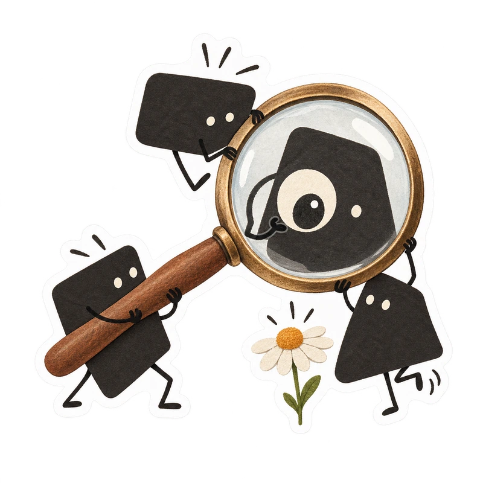
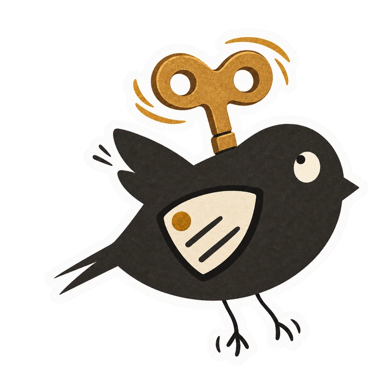

Give your logo
a little life.
An open-source agent skill that turns a real logo into a character with something to do. Each one here started as a flat logo.

Qunxueshape → cast
MultiPushmeaning → ability

Windupmark → motion
Drag a corner, or just click.
npx skills add huyanxius/logo-to-stickers
Three marks, fifteen little stories
These came out of one night of making stickers for a portfolio. The early attempts were stiff. Things started working when the brand itself supplied the cast, the ability, and the small things that could go wrong.
The examples could not load here. See them on GitHub.
What the skill pays attention to
Give a brand a small cast, a useful ability, and something slightly surprising to do. Each sticker gets one sentence of plot:
who does what→a small unexpected consequence→a readable reaction
- 01
Read the real mark
Keep the shapes, component count, or colour relationship that makes the brand recognisable.
- 02
Choose a translation
Let logo parts become a cast, or turn a product behaviour into a character’s ability.
- 03
Give it a situation
An action, a small consequence, and a reaction that still reads at thumbnail size.
- 04
Keep one identity
Reuse the first good sticker as the character reference while the action changes.
- 05
Finish it as paper
Matte printed colour, a narrow white die-cut edge, and real transparency outside it.
Make your own set
-
1Add the skill
npx skills add huyanxius/logo-to-stickersWorks with any agent the Skills CLI supports. Add
--listto look inside first. -
2Bring your logo
Attach the actual mark and ask:
Use $logo-to-stickers to make five playful paper stickers from this logo. Keep the brand recognisable, give each image a little story, and save five separate transparent PNGs. -
3Meet the cast
The agent makes one scene first, checks it, then uses it as the identity anchor for the rest of the set.
Full guide
Tested with Codex’s built-in image generator. Your agent needs an image tool that accepts reference images and produces transparent output; the skill brings the workflow, not an image model.